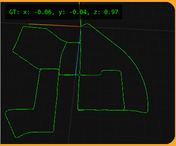

Evolución hacia un visor 3D
Tras desarrollar la primera versión del ejercicio de Visual Odometry, comencé a replantear cómo debía ser la representación final de los resultados. Aunque el visor 2D inicial permitía visualizar la trayectoria estimada por el algoritmo, rápidamente se hizo evidente que no era la solución más adecuada para un problema cuya naturaleza es tridimensional.
Por este motivo se decidió descartar el visor 2D desarrollado previamente y comenzar la implementación de un nuevo visor completamente en 3D.
Objetivos del nuevo visor
La idea principal era disponer de una representación más cercana a la realidad, donde pudiéramos visualizar no solo la trayectoria estimada por el usuario, sino también la trayectoria real del vehículo cuando estuviera disponible.
Esto permitiría comparar visualmente ambos recorridos y evaluar de forma mucho más intuitiva la precisión de los algoritmos implementados.
- Representar la trayectoria estimada por el usuario.
- Representar la trayectoria real (Ground Truth).
- Visualizar ambas trayectorias en un entorno tridimensional.
- Facilitar la comparación entre estimación y realidad.
Obtención del Ground Truth
Uno de los principales retos en esta etapa era obtener la posición real del vehículo para poder mostrarla en el visor.
Como todavía no se disponía de soporte para rosbags, se aprovechó la estructura del dataset KITTI, que incluye un fichero denominado poses.txt. Este fichero contiene la trayectoria real completa del vehículo durante la secuencia.
La solución adoptada consistió en leer directamente dicho fichero desde el propio WebGUI y utilizar sus datos para construir la trayectoria Ground Truth dentro del visor 3D.
Esta fue una solución temporal que permitió avanzar en el desarrollo. La idea a largo plazo era obtener esta información directamente desde los rosbags, eliminando la necesidad de leer archivos externos.
Visualización de la trayectoria completa
Una de las primeras pruebas consistió en representar la trayectoria completa del Ground Truth cargada desde el fichero poses.txt.

Esta representación permitió comprobar que la lectura de datos y la conversión al sistema de coordenadas utilizado por el visor se realizaban correctamente.
Representación durante la ejecución
Una vez validada la carga completa del recorrido, se implementó la actualización progresiva de la trayectoria durante la reproducción de la secuencia.
De esta forma el visor permitiria mostrar cómo avanza el vehículo a medida que se procesan los fotogramas, reproduciendo visualmente el recorrido realizado, esto cuando crearamos la solucion que estime la posicion, y la infraestructura proporcionara una funcion para representarla.
Conclusión
El desarrollo de este nuevo visor supuso un cambio importante respecto a la primera versión del ejercicio. Se abandonó la representación bidimensional inicial para adoptar una visualización en 3D mucho más adecuada para los problemas de odometría visual.
Además, la incorporación del Ground Truth obtenido a partir del dataset KITTI permitió sentar las bases para futuras comparaciones entre la trayectoria estimada por el usuario y la trayectoria real del vehículo, una de las funcionalidades principales previstas para la versión final del ejercicio.